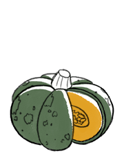

pumpkin
Pumpkins, or Cucurbita pepo, are a cultivar of winter squashes, typically round with ribbed skin, most often deep yellow to orange and dark green in color. Pumpkins can be pureed and canned, roasted, grilled or used decoratively. Pumpkins are a source of vitamin a.
Pumpkins are also cultivated for their seeds and oils.